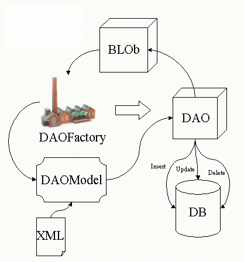

A package for generating automatic Data Access Objects (DAO) based on XML files.
Package Specification
The basic functionality of the package is showed on the following diagram :

Whereas :
- BLOb - Business Logic Object - This represents any object in your system that will use the DAOs.
- DAOFactory - The DAOFactory class is responsible of keeping the models and generate DAOs to be used by the BLObs.
- DAOModel - A model based on an XML file to represent the DAO.
- DAO - The Data Access Object - An object with the capability to access RDBMS.
- DB - The Database.
- XML - The xml file containing the description for the DAO.
The idea is to reduce programming time by only specifying necessary queries on the XML file, and use the functionality provided by the DAO to access the database.
XML File Example
<?xml version="1.0"?>
<!DOCTYPE dao PUBLIC "DTD for Efreet DAO Configuration File 1.0//EN" "efreet-dao_1_0.dtd">
<DAO NAME="Example" >
<QUERY NAME="nextUser">
<![CDATA[
select USER_ID.NEXTVAL as ID from DUAL
<RESULT INDEX="1">USER_ID</RESULT>
]]>
</QUERY>
<QUERY NAME="search">
<![CDATA[
select USER_ID, LOGIN, NAME
from USER
where USER_ID <> 0
and USER_ID = decode(?, 0, USER_ID, '', USER_ID, ?)
and LOGIN LIKE '%'||?||'%'
order by LOGIN
]]>
<PARAMETER INDEX="1" TYPE="NUMBER"/>
<PARAMETER INDEX="2" TYPE="NUMBER"/>
<PARAMETER INDEX="3" TYPE="CHAR"/>
<RESULT INDEX="1">S_USER_ID</RESULT>
<RESULT INDEX="2">S_LOGIN</RESULT>
<RESULT INDEX="3">S_NOME</RESULT>
</QUERY>
</DAO>
Code Sample
At anytime your objects can access the DAOs created by the factory with minimum coding :
import org.utopia.efreet.DAOFactory;
import org.utopia.efreet.DataAccessObject;
import org.utopia.efreet.QueryParameter;
import org.utopia.efreet.QueryResult;
...
// Example 1
// Retrieving a single line of results using a query
DataAccessObject dao = DAOFactory.createDAO("example");
QueryResult qr = dao.executeQuerySingle("nextUser");
int i = qr.getInt("USER_ID");
...
// Example 2
// Retrieving a collection of lines using a query
// First we create a QueryParameter object and populate it,
// this are the parameters to be passed to the query
QueryParameter qp = new QueryParameter();
qp.add(i);
qp.add(i);
qp.add("login");
Collection col = dao.executeQuery("search", qp);
// This is a Collection of objects of type QueryResult
// To retrieve the value you must iterate over it
Iterator iter = col.iterator();
while (it.hasNext()) {
QueryResult qr = (QueryResult) it.next();
int userId = qr.getInt("S_USER_ID");
String login = qr.getString("S_LOGIN");
String name = qr.getString("S_NOME");
}
...
@since 1.3